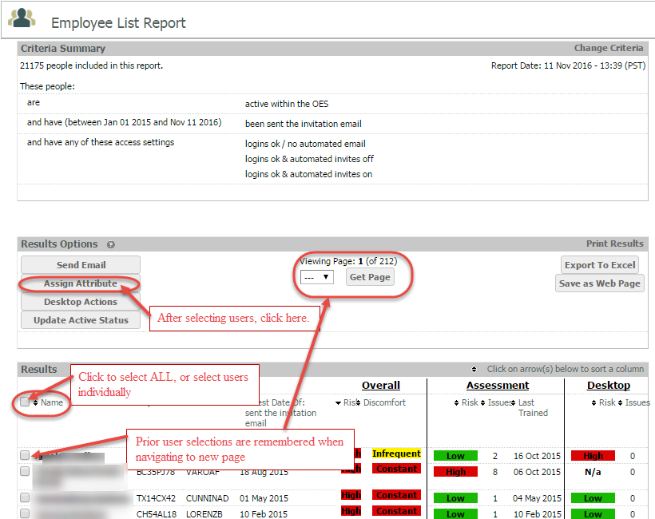
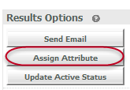
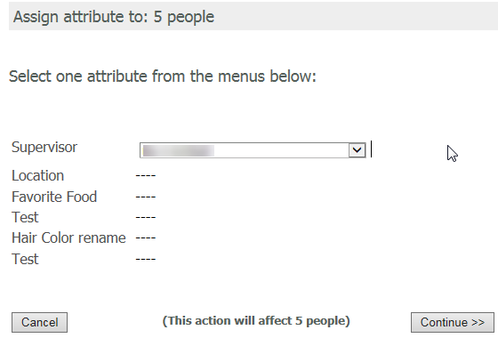
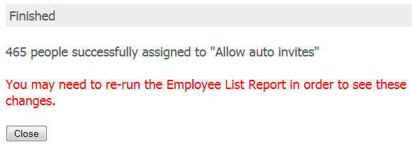
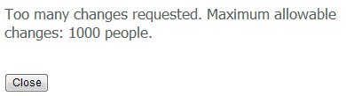
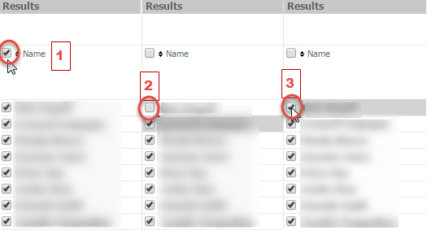
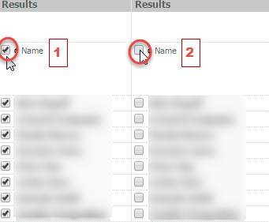
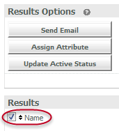
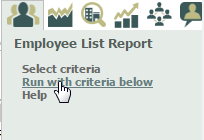

HR profile attributes may be changed in bulk by running an Employee List Report for the users and selecting users to edit from the results list.
See Employee List Report for information on running this report.
You may also assign "Active" and "Not Active" status in bulk and (if applicable) apply the Active Status Override. See Edit User Active Status .
To assign an HR attribute in bulk:
First select the users you want to edit.
Click the Name box to select all users in the results, or select users individually.
To select or de-select all users on the current page only, see the instructions on Making Bulk Selections below.
When there are multiple pages of results, and you navigate to a new page, the previously selected users are remembered.

Once you have selected the users you want, click Assign Attribute.

Choose the attribute to assign and click Continue.

You will then receive a confirmation that the changes have been made. You will need to re-run the Employee List Report to see the changes.

You can also Send Email and Update the Active Status of all individuals included in a report at one time; however, you can only Assign Attributes to 1000 users at a time.
Attempting to assign an attribute to more than 1000 users at a time will result in the following error message:

To select all users on the current page only:
Re-check the box next to the first name.

The result is only the users on the current page are now selected (maximum of 100 per page).
To clear all selections on the current page:
Uncheck the box next to Name.

The users on the current page will have been cleared. Note that any selections on other pages will remain.
To select all users in entire Employee List Report (all the pages):
Check the box next to Name.

Once you have checked the Name box to select all:
To clear all selections in entire Employee List Report (all the pages):
Select Run with criteria below from the Employee List Report button in the Reports menu.top right.
